<title>Results Gist</title>
<meta name="claude:viewport-fit-sides" content="cover">
<link rel="stylesheet" href="https://fonts.googleapis.com/css2?family=Outfit:wght@350;450;560;650&display=swap">
<style>
/* Layout: one column, evidence first. Same quiet document look as the earlier VRAM Sherpa galleries (violet accent, Outfit) so the new screens are the only loud thing. */
:root {
  --font: "Outfit", ui-sans-serif, system-ui, -apple-system, "Segoe UI", Roboto, sans-serif;
  --bg: #EEF0FF; --card: #FFFFFF; --ink: #14112B; --muted: #4A4670; --line: #C9CBEA; --accent: #4A17B8; --on-accent: #FFFFFF; --soft: #E4E2FF; --code: #E9E8FB;
}
@media (prefers-color-scheme: dark) { :root:not([data-theme="light"]) { --bg: #0B0C22; --card: #14163A; --ink: #F3F1FF; --muted: #C9C6EA; --line: #3A3D78; --accent: #CDB9FF; --on-accent: #10082B; --soft: #26235E; --code: #1F2150; color-scheme: dark; } }
:root[data-theme="dark"] { --bg: #0B0C22; --card: #14163A; --ink: #F3F1FF; --muted: #C9C6EA; --line: #3A3D78; --accent: #CDB9FF; --on-accent: #10082B; --soft: #26235E; --code: #1F2150; color-scheme: dark; }
body { background: var(--bg); color: var(--ink); font-family: var(--font); font-size: 16px; line-height: 1.55; }
.wrap { max-width: 1180px; margin: 0 auto; padding-block: 32px 72px; padding-left: max(16px, env(safe-area-inset-left, 0px)); padding-right: max(16px, env(safe-area-inset-right, 0px)); display: grid; grid-template-columns: minmax(0, 1fr); gap: 40px; }
.wrap > * { min-width: 0; }
h1 { font-size: clamp(32px, 6vw, 48px); line-height: 1.08; letter-spacing: -.03em; font-weight: 350; margin: 0; text-wrap: balance; }
h2 { font-size: 26px; letter-spacing: -.02em; font-weight: 450; margin: 0 0 14px; }
h3 { margin: 0; } h4 { font-size: 20px; font-weight: 560; margin: 0; letter-spacing: -.01em; }
p { margin: 0; } code { font-family: ui-monospace, SFMono-Regular, Menlo, Consolas, monospace; font-size: .88em; background: var(--code); padding: 1px 6px; border-radius: 6px; overflow-wrap: anywhere; }
.lede { max-width: 68ch; color: var(--muted); font-size: 18px; margin-top: 12px; }
.bar { position: sticky; top: env(safe-area-inset-top, 0px); z-index: 5; display: flex; flex-wrap: wrap; align-items: center; gap: 8px 16px; padding: 10px 14px; background: var(--card); border: 1px solid var(--line); border-radius: 18px; }
.bar span { color: var(--muted); font-size: 15px; }
.seg { display: inline-flex; padding: 3px; border-radius: 999px; background: var(--soft); }
.seg button { min-height: 44px; min-width: 88px; padding: 0 18px; border: 0; border-radius: 999px; background: transparent; color: var(--ink); font: inherit; font-weight: 560; cursor: pointer; }
.seg button[aria-pressed="true"] { background: var(--accent); color: var(--on-accent); }
.seg button:focus-visible, a:focus-visible { outline: 3px solid var(--accent); outline-offset: 2px; }
.jump { display: flex; flex-wrap: wrap; gap: 6px; }
.jump a { display: inline-flex; align-items: center; justify-content: center; min-width: 44px; min-height: 44px; padding: 0 10px; border-radius: 999px; border: 1px solid var(--line); background: var(--card); color: var(--ink); text-decoration: none; font-weight: 560; font-size: 15px; }
.jump a:hover { background: var(--soft); }
.pair { display: grid; grid-template-columns: minmax(0, 3.4fr) minmax(0, 1fr); gap: 16px; align-items: start; }
.ba { display: grid; grid-template-columns: minmax(0, 3.4fr) minmax(0, 1fr); gap: 16px; align-items: start; }
.ba + .ba { margin-top: 28px; }
.shot { margin: 0; display: grid; gap: 8px; min-width: 0; }
.shot figcaption { font-size: 14px; color: var(--muted); font-weight: 450; }
.shot img { display: block; width: 100%; height: auto; border-radius: 14px; border: 1px solid var(--line); }
.g { display: grid; gap: 40px; }
.gid { display: inline-flex; align-items: center; min-height: 36px; padding: 0 14px; border-radius: 999px; background: var(--accent); color: var(--on-accent); font-weight: 650; font-size: 18px; }
.state { display: grid; gap: 12px; }
.state-head { display: flex; flex-wrap: wrap; align-items: baseline; gap: 4px 16px; }
.reqs { color: var(--muted); font-size: 14px; }
.blurb { max-width: 76ch; }
.files { font-size: 14px; color: var(--muted); }
.table { overflow-x: auto; border: 1px solid var(--line); border-radius: 16px; background: var(--card); }
table { border-collapse: collapse; width: 100%; min-width: 640px; font-size: 15px; }
th, td { text-align: left; vertical-align: top; padding: 10px 14px; border-bottom: 1px solid var(--line); }
thead th { font-weight: 560; color: var(--muted); font-size: 14px; }
tbody th { font-weight: 560; width: 28%; } tr:last-child > * { border-bottom: 0; }
ol, ul.plain { margin: 0; padding-left: 22px; display: grid; gap: 12px; max-width: 80ch; }
@media (max-width: 760px) { .pair, .ba { grid-template-columns: minmax(0, 1fr); } .wrap { gap: 32px; } }
</style>
<main class="wrap">
<header><h1>Results gist</h1>
<p class="lede">A search now lands on the answer, not on 71 cards. You see the headline, three controls (Fits, Tight, Won't fit) and Top Picks. Pressing a control shows that verdict's models, five or ten at a time. This is Gate 2: approve the screens, the notes on what did not work, and the open points at the bottom.</p></header>
<div class="bar" role="group" aria-label="Screenshot theme"><strong>Screenshots</strong><div class="seg"><button type="button" id="t-light" aria-pressed="true">Light</button><button type="button" id="t-dark" aria-pressed="false">Dark</button></div><span>All 26 mockups are drawn at 1280 and 390 px in both themes.</span></div>
<nav class="jump" aria-label="States"><strong style="align-self:center;margin-right:6px">States</strong><a href="#g1">G1</a><a href="#g2">G2</a><a href="#g3">G3</a><a href="#g4">G4</a><a href="#g5">G5</a><a href="#g6">G6</a><a href="#g7">G7</a><a href="#g8">G8</a><a href="#g9">G9</a><a href="#g10">G10</a><a href="#g11">G11</a><a href="#g12">G12</a><a href="#g13">G13</a></nav>
<section><h2>Today and new</h2><p class="blurb" style="margin-bottom:16px">The reference query (<code>/results?vram_gb=24&amp;context_tokens=4096</code>). Today's page is cut at 1100 px (1280) and 1700 px (390); the whole page is 10,582 px and 25,855 px tall. The new page is shown whole.</p>
<div class="ba"><figure class="shot"><figcaption>Today, 1280 px, first 1100 px</figcaption>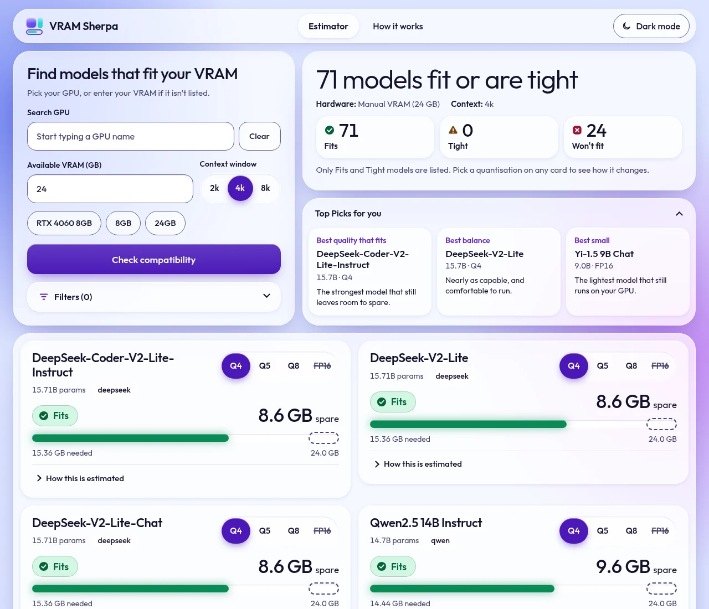</figure>
<figure class="shot"><figcaption>Today, 390 px, first 1700 px</figcaption>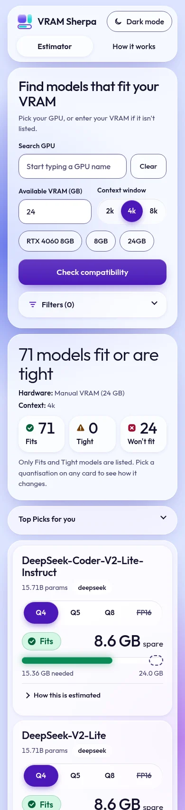</figure></div>
<div class="ba"><figure class="shot"><figcaption>New, 1280 px</figcaption>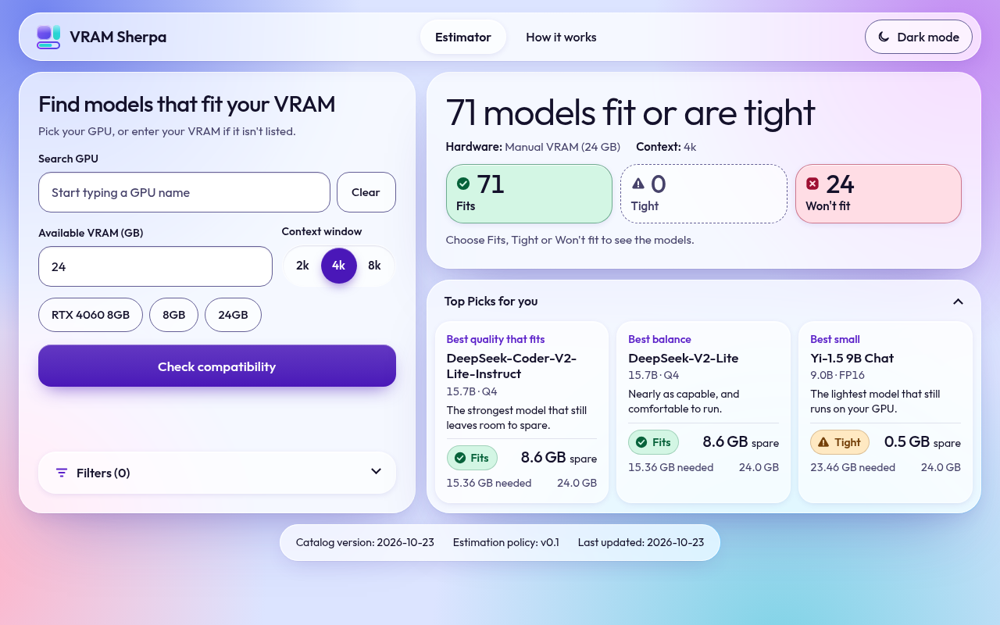</figure>
<figure class="shot"><figcaption>New, 390 px</figcaption>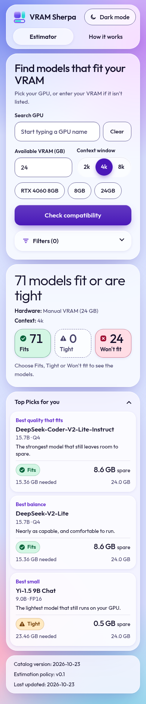</figure></div></section>
<section><h2>States</h2><div style="display:grid;gap:56px"><section class="g" id="g1"><h3><span class="gid">G1</span></h3><article class="state" id="reference"><div class="state-head"><h4>Gist of the reference query</h4><p class="reqs">R-084, R-085, R-091, R-092, R-069, R-023, R-024</p></div><p class="blurb"><code>/results?vram_gb=24&amp;context_tokens=4096</code>. The answer tile, the three controls and Top Picks, open, each pick with its verdict and three figures. No card. <code>Fits</code> and <code>Won&#x27;t fit</code> are links; <code>Tight</code> is the same tile, dashed, inert and out of the tab order. At 1280 px the picks end at 644 px (limit 800); at 390 px the controls end at 949 px (limit 1688).</p><div class="pair"><figure class="shot"><figcaption>1280 px</figcaption><a href="final/gist-reference-1280-light.png" target="_blank" rel="noopener"></a></figure><figure class="shot tall"><figcaption>390 px</figcaption><a href="final/gist-reference-390-light.png" target="_blank" rel="noopener"></a></figure></div><p class="files">Mockup <code>docs/design/mockups/final-gist-reference.html</code>. Renders <code>docs/design/final/gist-reference-&lt;390|1280&gt;-&lt;light|dark&gt;.png</code>.</p></article></section><section class="g" id="g2"><h3><span class="gid">G2</span></h3><article class="state" id="all-three"><div class="state-head"><h4>Gist with all three counts above 0</h4><p class="reqs">R-084, R-085, R-023</p></div><p class="blurb"><code>/results?vram_gb=8&amp;context_tokens=2048</code>: 49, 9 and 37, all three links. Picks end at 644 px at 1280.</p><div class="pair"><figure class="shot"><figcaption>1280 px</figcaption><a href="final/gist-all-three-1280-light.png" target="_blank" rel="noopener">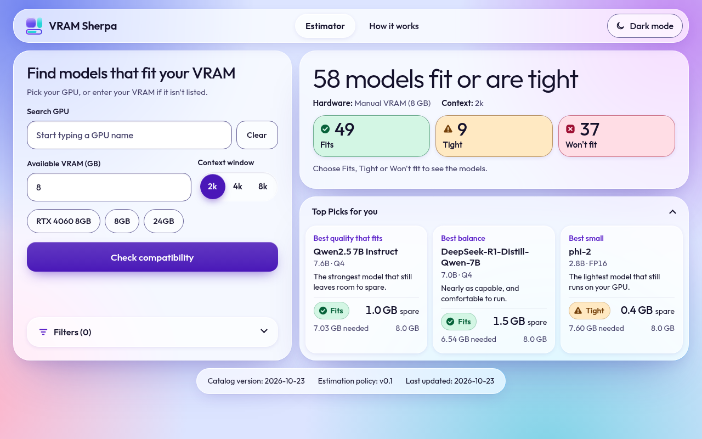</a></figure><figure class="shot tall"><figcaption>390 px</figcaption><a href="final/gist-all-three-390-light.png" target="_blank" rel="noopener">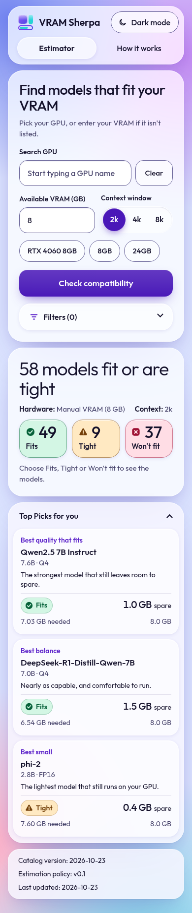</a></figure></div><p class="files">Mockup <code>docs/design/mockups/final-gist-all-three.html</code>. Renders <code>docs/design/final/gist-all-three-&lt;390|1280&gt;-&lt;light|dark&gt;.png</code>.</p></article></section><section class="g" id="g3"><h3><span class="gid">G3</span></h3><article class="state" id="list-fits"><div class="state-head"><h4>Fits selected, page 1 at size 5</h4><p class="reqs">R-085, R-086, R-087, R-091, R-069</p></div><p class="blurb"><code>…&amp;verdict=fits</code>. The selected tile gets a 3 px ink border; the list opens with its heading, <code>Models per page</code> sits on the same row, five cards follow, <code>Previous</code>, the numbers and <code>Next</code> close the list. Top Picks stay open at 1280 and are closed on a phone. First card&#x27;s verdict and margin end at 896 px at 1280 (limit 900) and 1471 px at 390 (limit 1688).</p><div class="pair"><figure class="shot"><figcaption>1280 px</figcaption><a href="final/gist-list-fits-1280-light.png" target="_blank" rel="noopener">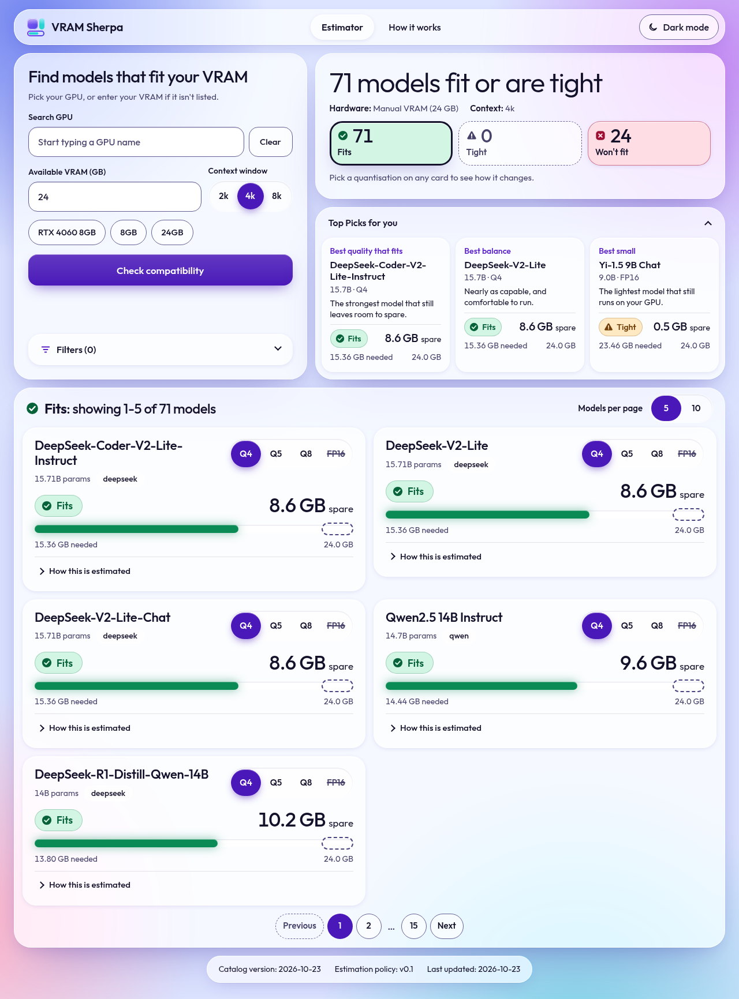</a></figure><figure class="shot tall"><figcaption>390 px</figcaption><a href="final/gist-list-fits-390-light.png" target="_blank" rel="noopener">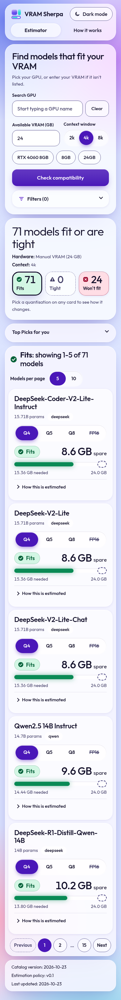</a></figure></div><p class="files">Mockup <code>docs/design/mockups/final-gist-list-fits.html</code>. Renders <code>docs/design/final/gist-list-fits-&lt;390|1280&gt;-&lt;light|dark&gt;.png</code>.</p></article></section><section class="g" id="g4"><h3><span class="gid">G4</span></h3><article class="state" id="list-fits-middle"><div class="state-head"><h4>A middle page and its number window</h4><p class="reqs">R-087, R-091</p></div><p class="blurb"><code>…&amp;verdict=fits&amp;page=6</code>: <code>Fits: showing 26-30 of 71 models</code>, window <code>1 … 5 6 7 … 15</code>. At 390 px the controls wrap onto a second row, which R-091 allows.</p><div class="pair"><figure class="shot"><figcaption>1280 px</figcaption><a href="final/gist-list-fits-middle-1280-light.png" target="_blank" rel="noopener">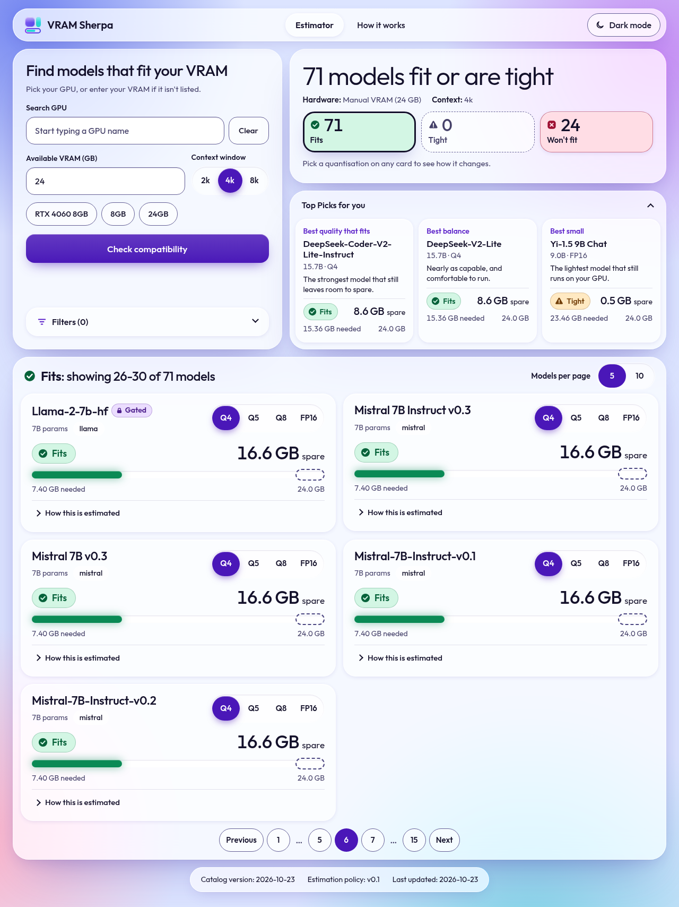</a></figure><figure class="shot tall"><figcaption>390 px</figcaption><a href="final/gist-list-fits-middle-390-light.png" target="_blank" rel="noopener">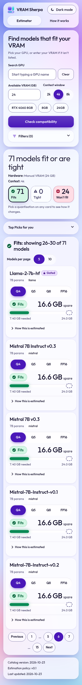</a></figure></div><p class="files">Mockup <code>docs/design/mockups/final-gist-list-fits-middle.html</code>. Renders <code>docs/design/final/gist-list-fits-middle-&lt;390|1280&gt;-&lt;light|dark&gt;.png</code>.</p></article></section><section class="g" id="g5"><h3><span class="gid">G5</span></h3><article class="state" id="list-fits-last"><div class="state-head"><h4>The last page, one card</h4><p class="reqs">R-087</p></div><p class="blurb"><code>…&amp;verdict=fits&amp;page=15</code>: <code>Fits: showing 71 of 71 models</code>, <code>Next</code> inert, window <code>1 … 14 15</code>.</p><div class="pair"><figure class="shot"><figcaption>1280 px</figcaption><a href="final/gist-list-fits-last-1280-light.png" target="_blank" rel="noopener">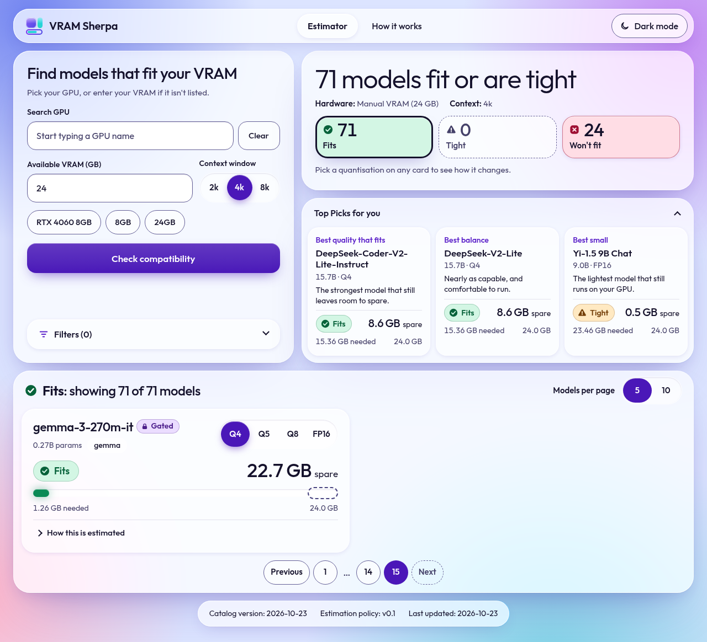</a></figure><figure class="shot tall"><figcaption>390 px</figcaption><a href="final/gist-list-fits-last-390-light.png" target="_blank" rel="noopener">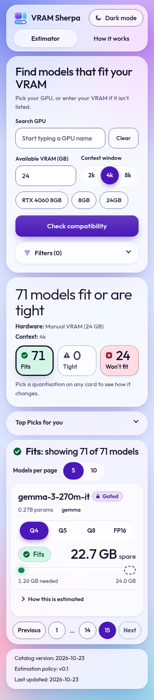</a></figure></div><p class="files">Mockup <code>docs/design/mockups/final-gist-list-fits-last.html</code>. Renders <code>docs/design/final/gist-list-fits-last-&lt;390|1280&gt;-&lt;light|dark&gt;.png</code>.</p></article><article class="state" id="list-fits-size10"><div class="state-head"><h4>Size 10</h4><p class="reqs">R-087</p></div><p class="blurb"><code>…&amp;verdict=fits&amp;page_size=10</code>: ten cards, <code>10</code> marked current, <code>1 2 … 8</code>.</p><div class="pair"><figure class="shot"><figcaption>1280 px</figcaption><a href="final/gist-list-fits-size10-1280-light.png" target="_blank" rel="noopener">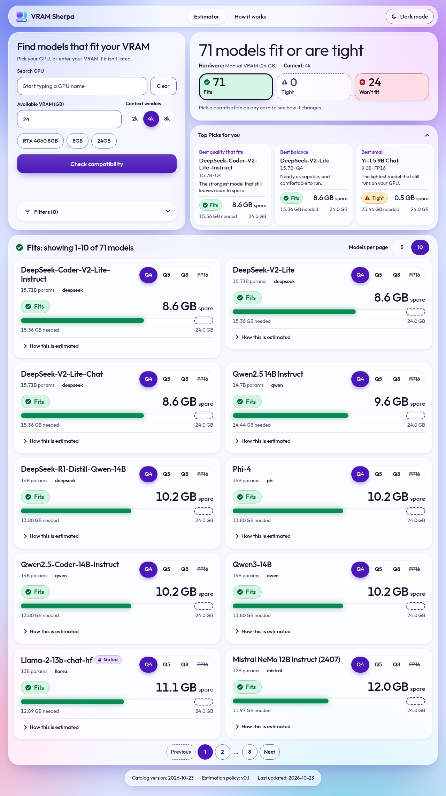</a></figure><figure class="shot tall"><figcaption>390 px</figcaption><a href="final/gist-list-fits-size10-390-light.png" target="_blank" rel="noopener">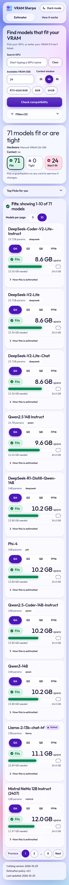</a></figure></div><p class="files">Mockup <code>docs/design/mockups/final-gist-list-fits-size10.html</code>. Renders <code>docs/design/final/gist-list-fits-size10-&lt;390|1280&gt;-&lt;light|dark&gt;.png</code>.</p></article></section><section class="g" id="g6"><h3><span class="gid">G6</span></h3><article class="state" id="list-tight"><div class="state-head"><h4>Tight selected</h4><p class="reqs">R-085, R-086, R-087</p></div><p class="blurb"><code>/results?vram_gb=8&amp;context_tokens=2048&amp;verdict=tight</code>: 9 models, 2 pages (5, then 4). <code>Tight</code> is now the selected tile and the cards open on their <code>Tight</code> variants.</p><div class="pair"><figure class="shot"><figcaption>1280 px</figcaption><a href="final/gist-list-tight-1280-light.png" target="_blank" rel="noopener">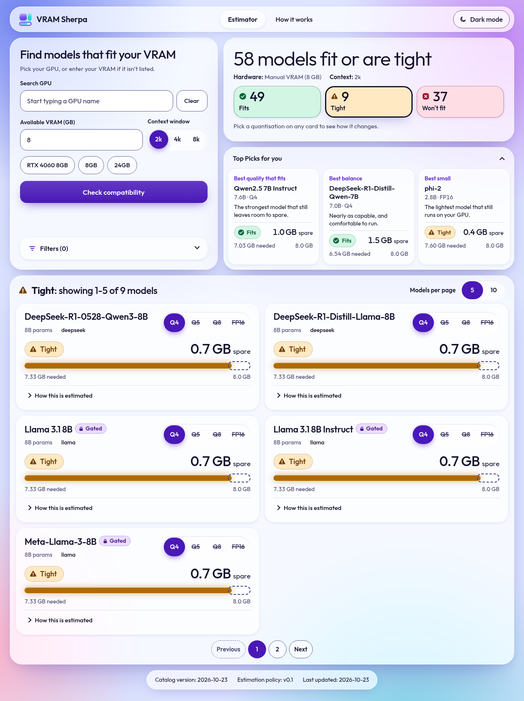</a></figure><figure class="shot tall"><figcaption>390 px</figcaption><a href="final/gist-list-tight-390-light.png" target="_blank" rel="noopener">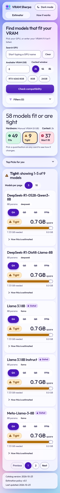</a></figure></div><p class="files">Mockup <code>docs/design/mockups/final-gist-list-tight.html</code>. Renders <code>docs/design/final/gist-list-tight-&lt;390|1280&gt;-&lt;light|dark&gt;.png</code>.</p></article><article class="state" id="list-tight-short"><div class="state-head"><h4>Tight, 4 models</h4><p class="reqs">R-087</p></div><p class="blurb"><code>…&amp;family=llama&amp;verdict=tight</code>: 4 models, so neither the page sizes nor the page controls are drawn. The <code>Family: llama</code> chip sits under the controls.</p><div class="pair"><figure class="shot"><figcaption>1280 px</figcaption><a href="final/gist-list-tight-short-1280-light.png" target="_blank" rel="noopener">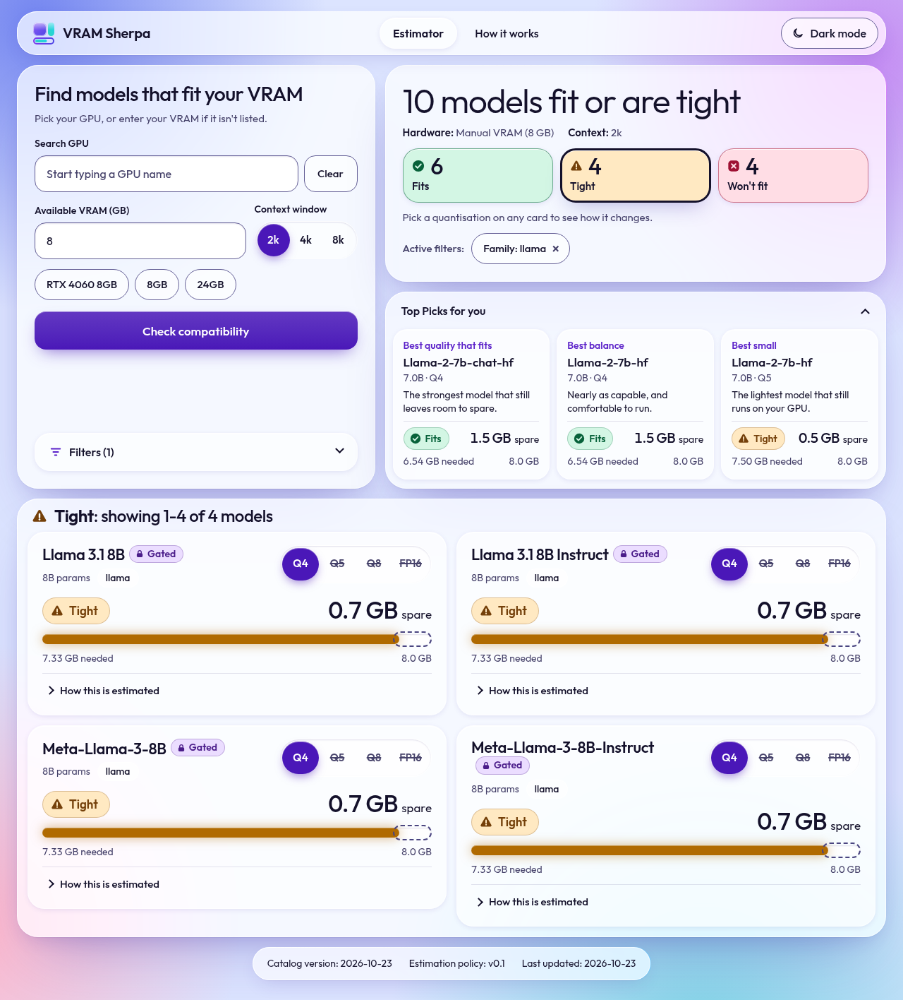</a></figure><figure class="shot tall"><figcaption>390 px</figcaption><a href="final/gist-list-tight-short-390-light.png" target="_blank" rel="noopener">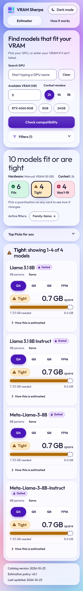</a></figure></div><p class="files">Mockup <code>docs/design/mockups/final-gist-list-tight-short.html</code>. Renders <code>docs/design/final/gist-list-tight-short-&lt;390|1280&gt;-&lt;light|dark&gt;.png</code>.</p></article><article class="state" id="list-tight-size10"><div class="state-head"><h4>Tight at size 10, 9 models</h4><p class="reqs">R-087</p></div><p class="blurb"><code>…&amp;verdict=tight&amp;page_size=10</code>: the page sizes show, the page controls do not.</p><div class="pair"><figure class="shot"><figcaption>1280 px</figcaption><a href="final/gist-list-tight-size10-1280-light.png" target="_blank" rel="noopener">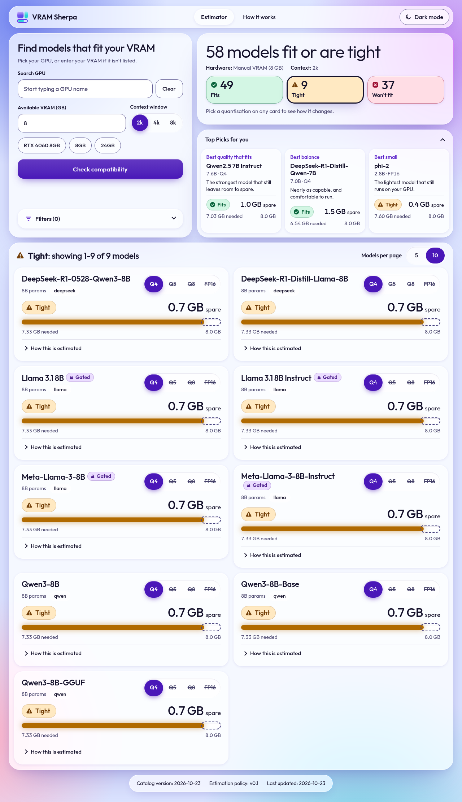</a></figure><figure class="shot tall"><figcaption>390 px</figcaption><a href="final/gist-list-tight-size10-390-light.png" target="_blank" rel="noopener">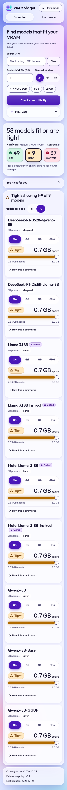</a></figure></div><p class="files">Mockup <code>docs/design/mockups/final-gist-list-tight-size10.html</code>. Renders <code>docs/design/final/gist-list-tight-size10-&lt;390|1280&gt;-&lt;light|dark&gt;.png</code>.</p></article></section><section class="g" id="g7"><h3><span class="gid">G7</span></h3><article class="state" id="list-wont-fit"><div class="state-head"><h4>Won&#x27;t fit selected</h4><p class="reqs">R-086, R-017, R-018, R-019, R-016</p></div><p class="blurb"><code>…&amp;verdict=wont-fit</code>: closest to fitting first (<code>4.4 GB over</code> for three models, then <code>6.3 GB over</code>). Every quantisation button is struck through, the gauge is full, the margin reads <code>GB over</code>. The open button is struck through and still readable (see &quot;What did not work&quot;, item 2).</p><div class="pair"><figure class="shot"><figcaption>1280 px</figcaption><a href="final/gist-list-wont-fit-1280-light.png" target="_blank" rel="noopener">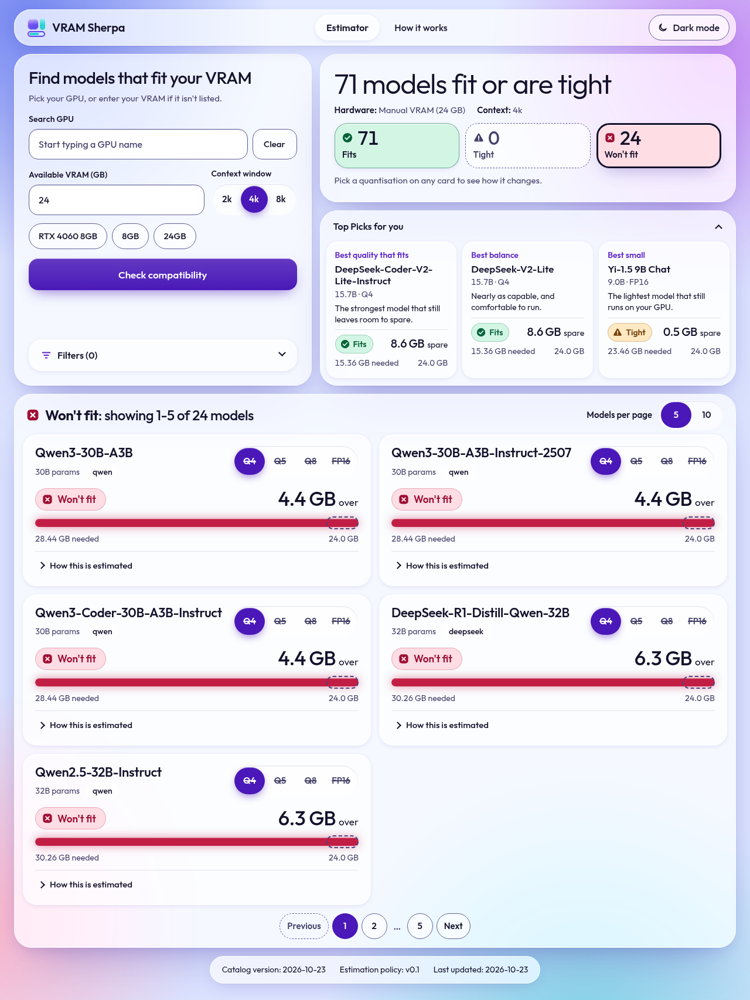</a></figure><figure class="shot tall"><figcaption>390 px</figcaption><a href="final/gist-list-wont-fit-390-light.png" target="_blank" rel="noopener">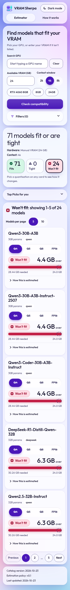</a></figure></div><p class="files">Mockup <code>docs/design/mockups/final-gist-list-wont-fit.html</code>. Renders <code>docs/design/final/gist-list-wont-fit-&lt;390|1280&gt;-&lt;light|dark&gt;.png</code>.</p></article><article class="state" id="list-wont-fit-page10"><div class="state-head"><h4>Won&#x27;t fit, page 10 of 19</h4><p class="reqs">R-091, R-087</p></div><p class="blurb"><code>/results?vram_gb=1&amp;verdict=wont-fit&amp;page=10</code>: window <code>1 … 9 10 11 … 19</code>, the widest case. Top Picks are hidden (no pick exists at 1 GB).</p><div class="pair"><figure class="shot"><figcaption>1280 px</figcaption><a href="final/gist-list-wont-fit-page10-1280-light.png" target="_blank" rel="noopener">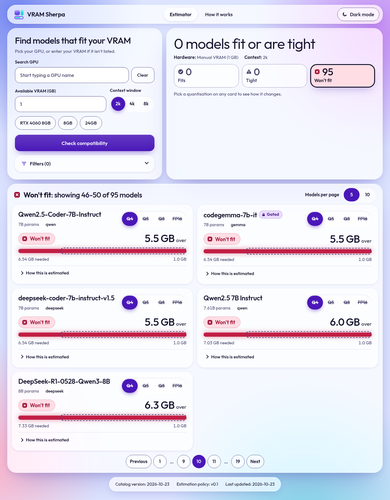</a></figure><figure class="shot tall"><figcaption>390 px</figcaption><a href="final/gist-list-wont-fit-page10-390-light.png" target="_blank" rel="noopener">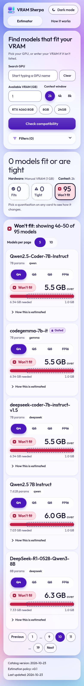</a></figure></div><p class="files">Mockup <code>docs/design/mockups/final-gist-list-wont-fit-page10.html</code>. Renders <code>docs/design/final/gist-list-wont-fit-page10-&lt;390|1280&gt;-&lt;light|dark&gt;.png</code>.</p></article></section><section class="g" id="g8"><h3><span class="gid">G8</span></h3><article class="state" id="verdict-zero"><div class="state-head"><h4>A link that names a verdict with a count of 0</h4><p class="reqs">R-085, R-089</p></div><p class="blurb"><code>…&amp;verdict=tight</code>: the gist, with <code>No models in Tight with these settings.</code> in the notice area under the hardware line, with the other <code>role=&quot;status&quot;</code> messages. <code>Tight</code> stays inert.</p><div class="pair"><figure class="shot"><figcaption>1280 px</figcaption><a href="final/gist-verdict-zero-1280-light.png" target="_blank" rel="noopener">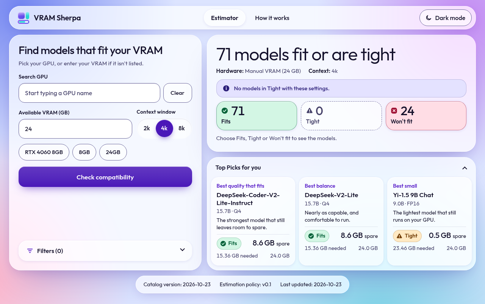</a></figure><figure class="shot tall"><figcaption>390 px</figcaption><a href="final/gist-verdict-zero-390-light.png" target="_blank" rel="noopener">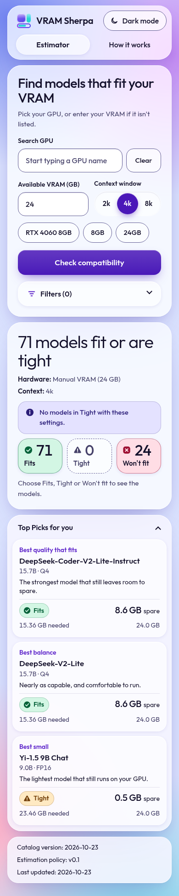</a></figure></div><p class="files">Mockup <code>docs/design/mockups/final-gist-verdict-zero.html</code>. Renders <code>docs/design/final/gist-verdict-zero-&lt;390|1280&gt;-&lt;light|dark&gt;.png</code>.</p></article></section><section class="g" id="g9"><h3><span class="gid">G9</span></h3><article class="state" id="message-ambiguous"><div class="state-head"><h4>Ambiguous GPU search</h4><p class="reqs">R-084, R-003, R-022, R-069</p></div><p class="blurb"><code>/results?gpu_search=RTX</code>. Picks end at 748 px at 1280 (limit 900 with a message).</p><div class="pair"><figure class="shot"><figcaption>1280 px</figcaption><a href="final/gist-message-ambiguous-1280-light.png" target="_blank" rel="noopener">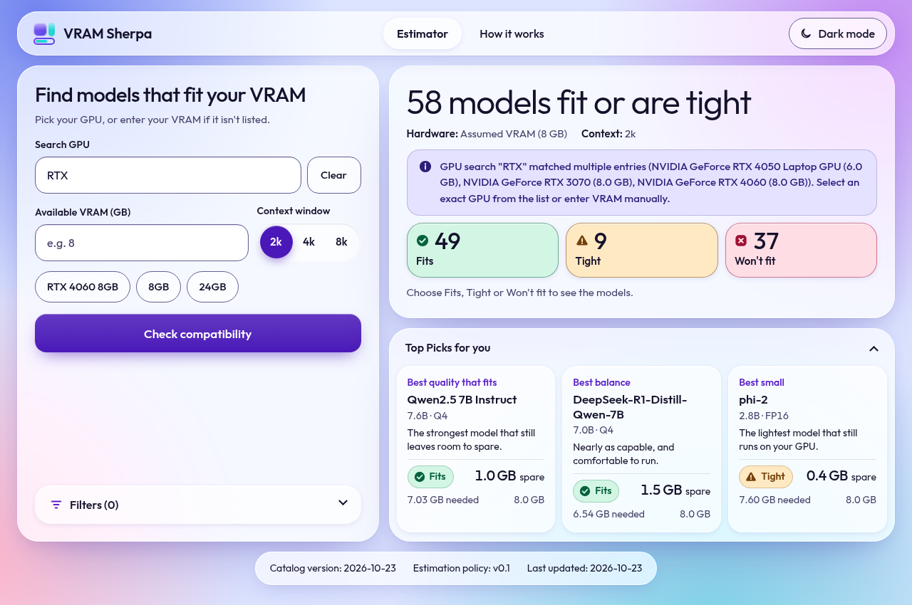</a></figure><figure class="shot tall"><figcaption>390 px</figcaption><a href="final/gist-message-ambiguous-390-light.png" target="_blank" rel="noopener">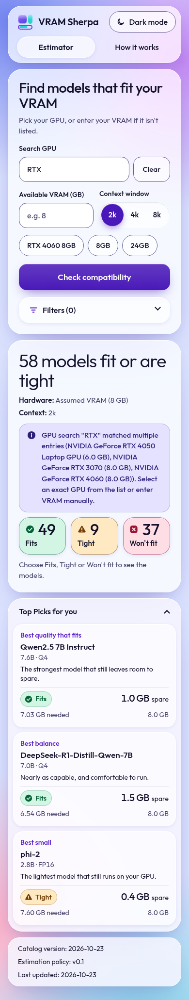</a></figure></div><p class="files">Mockup <code>docs/design/mockups/final-gist-message-ambiguous.html</code>. Renders <code>docs/design/final/gist-message-ambiguous-&lt;390|1280&gt;-&lt;light|dark&gt;.png</code>.</p></article><article class="state" id="message-notfound"><div class="state-head"><h4>GPU not found</h4><p class="reqs">R-084, R-003, R-022, R-069</p></div><p class="blurb"><code>/results?gpu_search=RTX%203060%2012GB</code>. Picks end at 703 px.</p><div class="pair"><figure class="shot"><figcaption>1280 px</figcaption><a href="final/gist-message-notfound-1280-light.png" target="_blank" rel="noopener">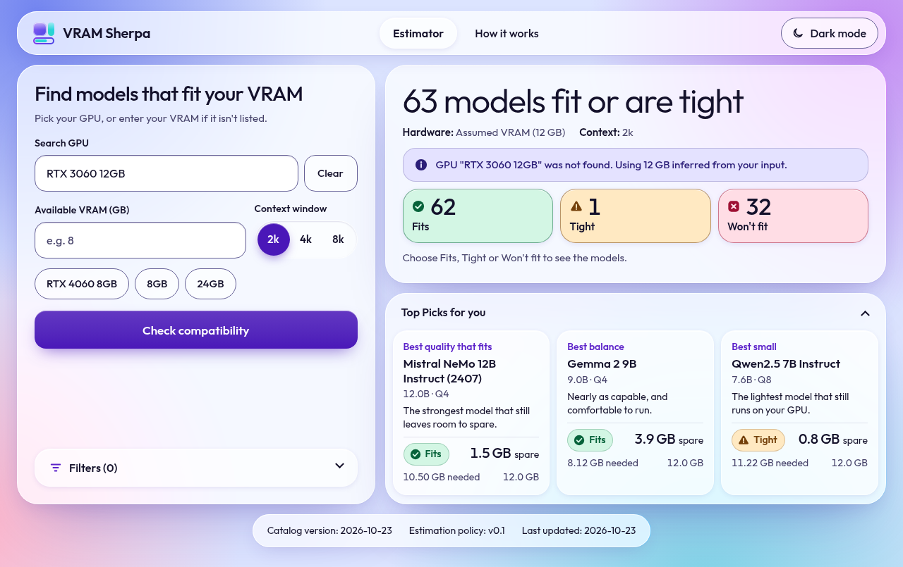</a></figure><figure class="shot tall"><figcaption>390 px</figcaption><a href="final/gist-message-notfound-390-light.png" target="_blank" rel="noopener">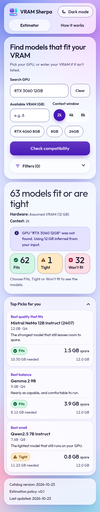</a></figure></div><p class="files">Mockup <code>docs/design/mockups/final-gist-message-notfound.html</code>. Renders <code>docs/design/final/gist-message-notfound-&lt;390|1280&gt;-&lt;light|dark&gt;.png</code>.</p></article><article class="state" id="message-invalid"><div class="state-head"><h4>Input error</h4><p class="reqs">R-084, R-008, R-069</p></div><p class="blurb"><code>/results?vram_gb=abc</code>: the error list and the assumed-8 GB note both show, the worst case. Picks end at 788 px.</p><div class="pair"><figure class="shot"><figcaption>1280 px</figcaption><a href="final/gist-message-invalid-1280-light.png" target="_blank" rel="noopener">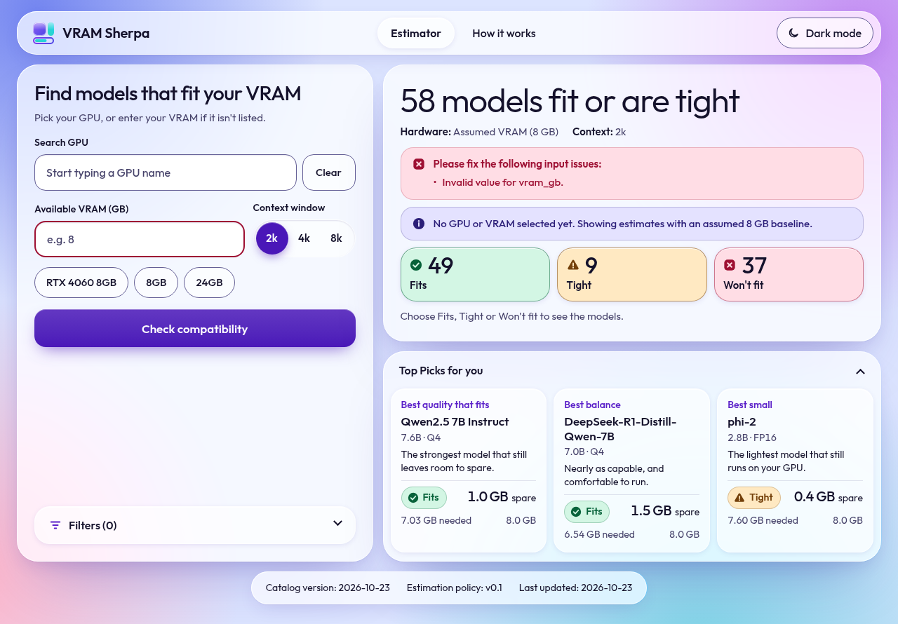</a></figure><figure class="shot tall"><figcaption>390 px</figcaption><a href="final/gist-message-invalid-390-light.png" target="_blank" rel="noopener">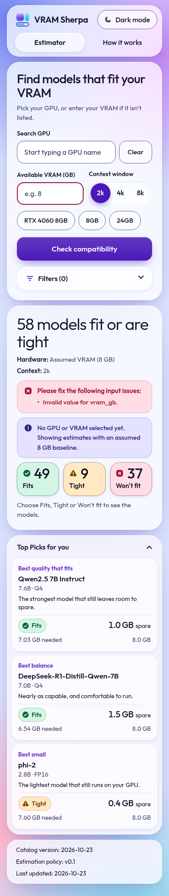</a></figure></div><p class="files">Mockup <code>docs/design/mockups/final-gist-message-invalid.html</code>. Renders <code>docs/design/final/gist-message-invalid-&lt;390|1280&gt;-&lt;light|dark&gt;.png</code>.</p></article></section><section class="g" id="g10"><h3><span class="gid">G10</span></h3><article class="state" id="empty-wont-link"><div class="state-head"><h4>Empty state, <code>Won&#x27;t fit</code> is a link</h4><p class="reqs">R-025, R-084, R-085</p></div><p class="blurb"><code>/results?vram_gb=1</code>: <code>Fits</code> and <code>Tight</code> inert, <code>Won&#x27;t fit</code> (95) a link. The empty state sits below, where Top Picks would be. Top Picks are hidden (R-024).</p><div class="pair"><figure class="shot"><figcaption>1280 px</figcaption><a href="final/gist-empty-wont-link-1280-light.png" target="_blank" rel="noopener">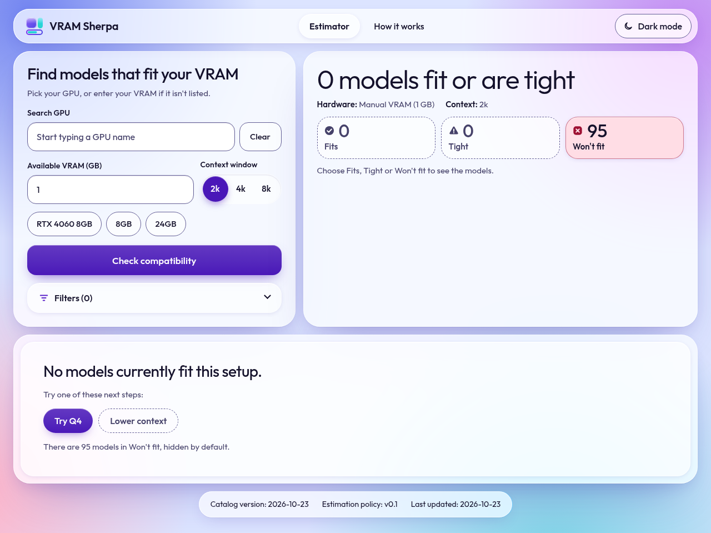</a></figure><figure class="shot tall"><figcaption>390 px</figcaption><a href="final/gist-empty-wont-link-390-light.png" target="_blank" rel="noopener">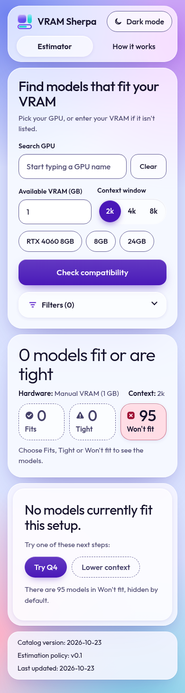</a></figure></div><p class="files">Mockup <code>docs/design/mockups/final-gist-empty-wont-link.html</code>. Renders <code>docs/design/final/gist-empty-wont-link-&lt;390|1280&gt;-&lt;light|dark&gt;.png</code>.</p></article><article class="state" id="empty-all-inert"><div class="state-head"><h4>Empty state, all three inert</h4><p class="reqs">R-025, R-084</p></div><p class="blurb"><code>/results?vram_gb=24&amp;min_params_b=5&amp;max_params_b=1</code>: nothing in any verdict, so no note and no <code>Won&#x27;t fit</code> line.</p><div class="pair"><figure class="shot"><figcaption>1280 px</figcaption><a href="final/gist-empty-all-inert-1280-light.png" target="_blank" rel="noopener">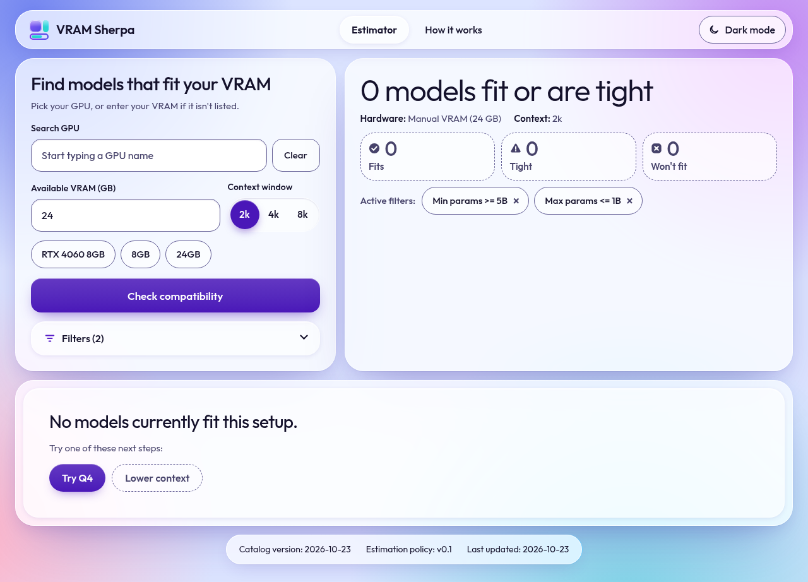</a></figure><figure class="shot tall"><figcaption>390 px</figcaption><a href="final/gist-empty-all-inert-390-light.png" target="_blank" rel="noopener">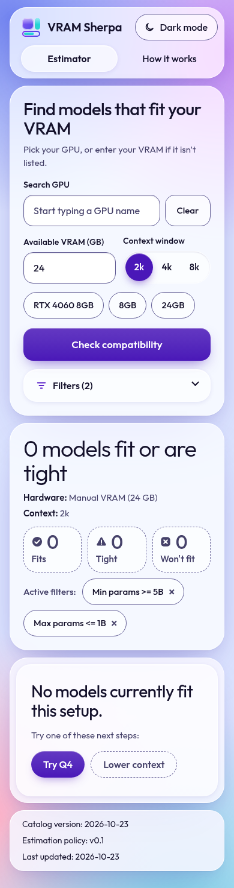</a></figure></div><p class="files">Mockup <code>docs/design/mockups/final-gist-empty-all-inert.html</code>. Renders <code>docs/design/final/gist-empty-all-inert-&lt;390|1280&gt;-&lt;light|dark&gt;.png</code>.</p></article></section><section class="g" id="g11"><h3><span class="gid">G11</span></h3><article class="state" id="unseeded"><div class="state-head"><h4>Catalog unseeded</h4><p class="reqs">R-026, R-084</p></div><p class="blurb">All three controls inert, Top Picks hidden, the two sentences of R-026 in a status notice, footer values <code>unseeded</code>.</p><div class="pair"><figure class="shot"><figcaption>1280 px</figcaption><a href="final/gist-unseeded-1280-light.png" target="_blank" rel="noopener">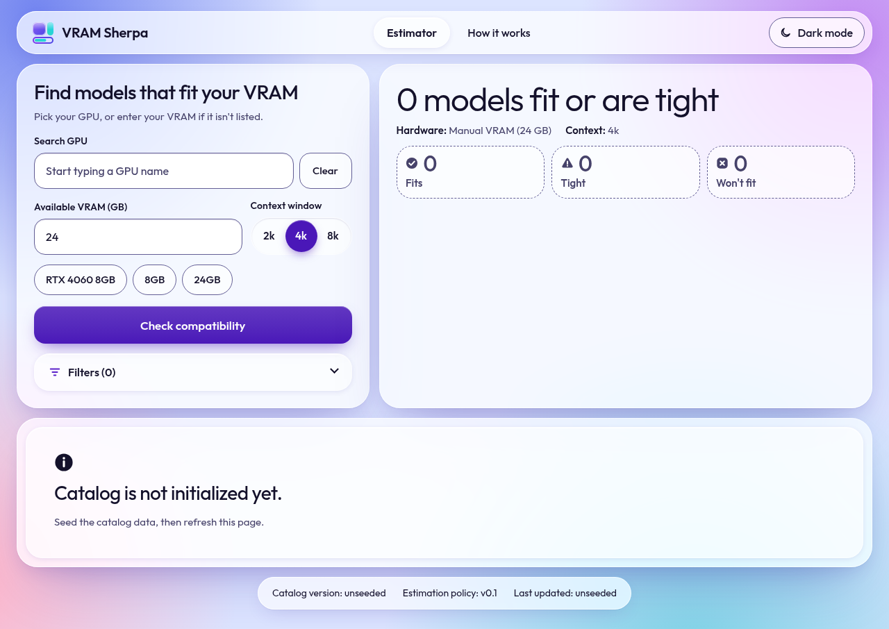</a></figure><figure class="shot tall"><figcaption>390 px</figcaption><a href="final/gist-unseeded-390-light.png" target="_blank" rel="noopener">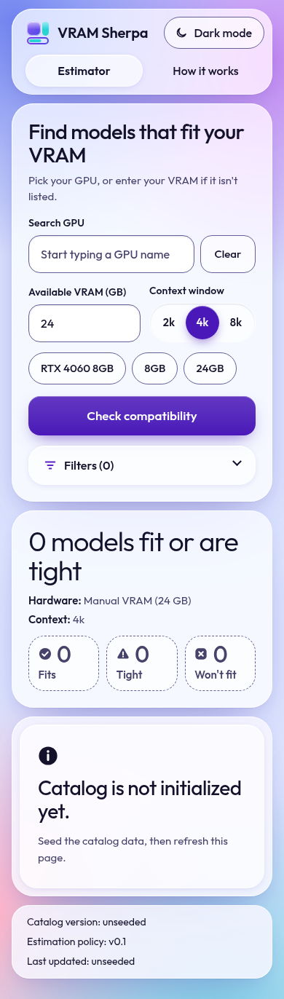</a></figure></div><p class="files">Mockup <code>docs/design/mockups/final-gist-unseeded.html</code>. Renders <code>docs/design/final/gist-unseeded-&lt;390|1280&gt;-&lt;light|dark&gt;.png</code>.</p></article></section><section class="g" id="g12"><h3><span class="gid">G12</span></h3><article class="state" id="loading-from-gist"><div class="state-head"><h4>Loading, from the gist</h4><p class="reqs">R-090, R-091</p></div><p class="blurb"><code>Fits</code> was pressed. The gist stays exactly where it was and the control shows a ring; <code>Loading models</code> is fixed to the top of the viewport. The headline does not move.</p><div class="pair"><figure class="shot"><figcaption>1280 px</figcaption><a href="final/gist-loading-from-gist-1280-light.png" target="_blank" rel="noopener">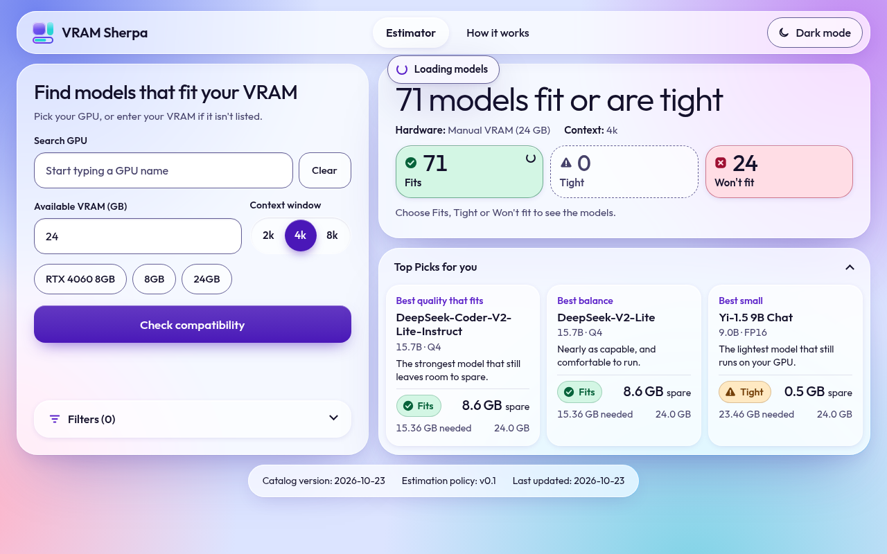</a></figure><figure class="shot tall"><figcaption>390 px</figcaption><a href="final/gist-loading-from-gist-390-light.png" target="_blank" rel="noopener">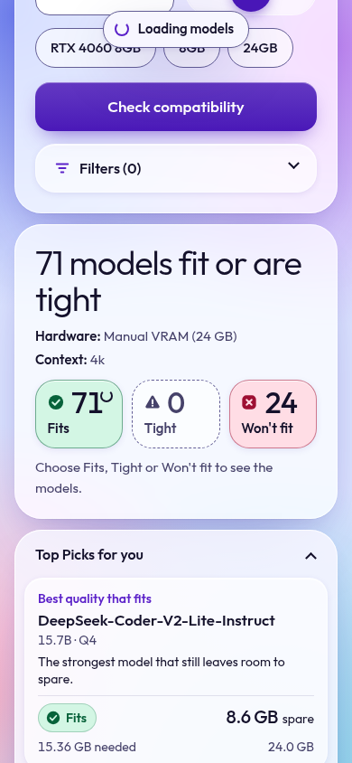</a></figure></div><p class="files">Mockup <code>docs/design/mockups/final-gist-loading-from-gist.html</code>. Renders <code>docs/design/final/gist-loading-from-gist-&lt;390|1280&gt;-&lt;light|dark&gt;.png</code>.</p></article><article class="state" id="loading-next-page"><div class="state-head"><h4>Loading, after Next</h4><p class="reqs">R-090</p></div><p class="blurb">A viewport capture, scrolled to the bottom of a long list, where <code>Next</code> was pressed. The top of the results is off-screen, which is why the message cannot live in the page flow. The pressed link shows the ring.</p><div class="pair"><figure class="shot"><figcaption>1280 px</figcaption><a href="final/gist-loading-next-page-1280-light.png" target="_blank" rel="noopener">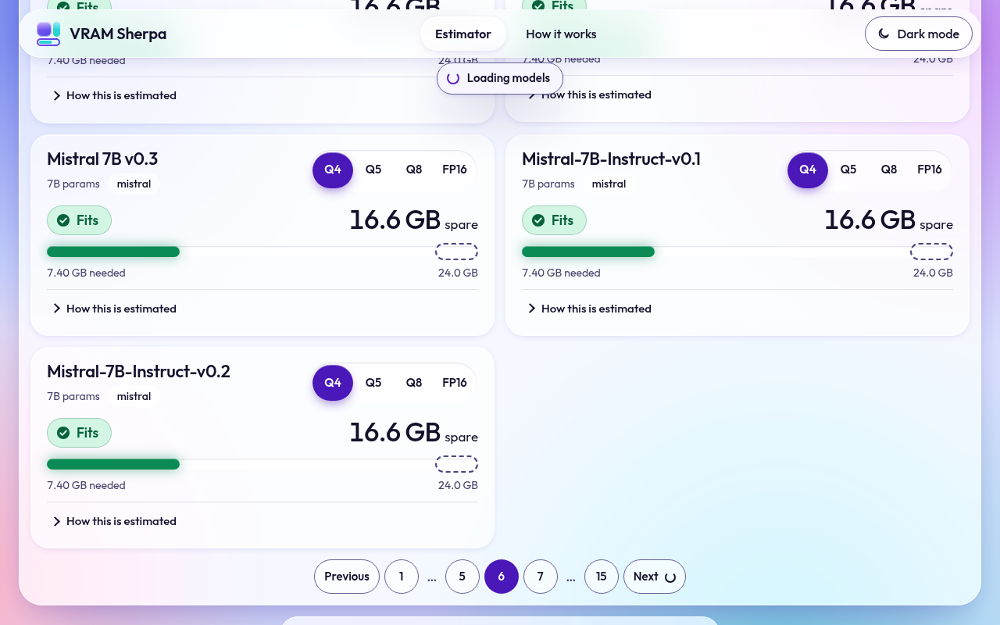</a></figure><figure class="shot tall"><figcaption>390 px</figcaption><a href="final/gist-loading-next-page-390-light.png" target="_blank" rel="noopener">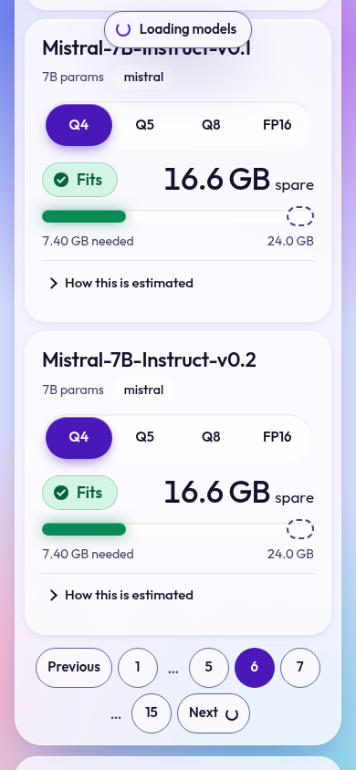</a></figure></div><p class="files">Mockup <code>docs/design/mockups/final-gist-loading-next-page.html</code>. Renders <code>docs/design/final/gist-loading-next-page-&lt;390|1280&gt;-&lt;light|dark&gt;.png</code>.</p></article><article class="state" id="failed-from-gist"><div class="state-head"><h4>Failed, from the gist</h4><p class="reqs">R-090</p></div><p class="blurb"><code>Could not load the models. Try again.</code> The current view stays, no retry button.</p><div class="pair"><figure class="shot"><figcaption>1280 px</figcaption><a href="final/gist-failed-from-gist-1280-light.png" target="_blank" rel="noopener">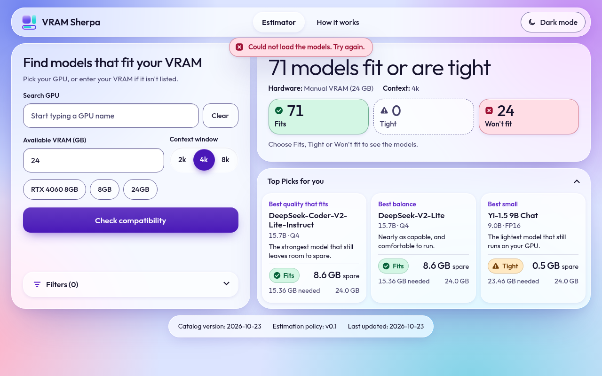</a></figure><figure class="shot tall"><figcaption>390 px</figcaption><a href="final/gist-failed-from-gist-390-light.png" target="_blank" rel="noopener">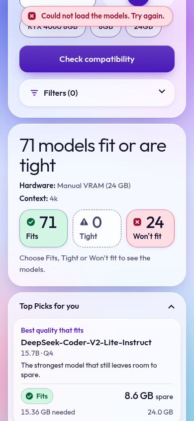</a></figure></div><p class="files">Mockup <code>docs/design/mockups/final-gist-failed-from-gist.html</code>. Renders <code>docs/design/final/gist-failed-from-gist-&lt;390|1280&gt;-&lt;light|dark&gt;.png</code>.</p></article><article class="state" id="failed-next-page"><div class="state-head"><h4>Failed, after Next</h4><p class="reqs">R-090</p></div><p class="blurb">Same message over a list. The page controls stay clickable: the message sits at the top, away from them.</p><div class="pair"><figure class="shot"><figcaption>1280 px</figcaption><a href="final/gist-failed-next-page-1280-light.png" target="_blank" rel="noopener">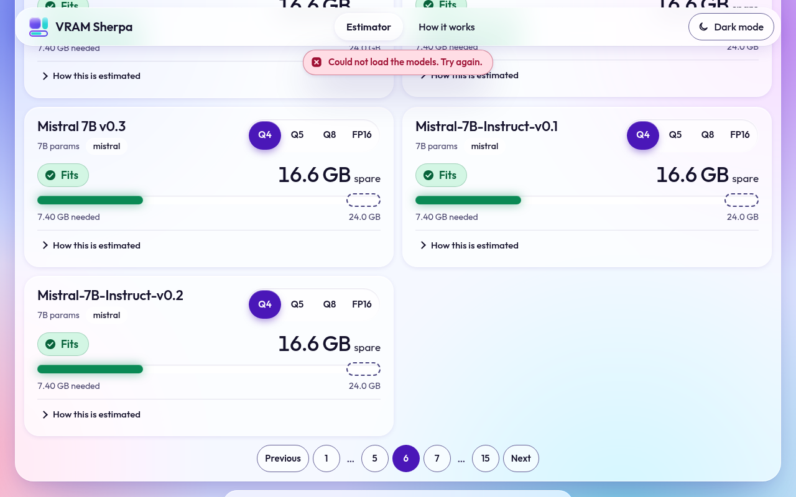</a></figure><figure class="shot tall"><figcaption>390 px</figcaption><a href="final/gist-failed-next-page-390-light.png" target="_blank" rel="noopener">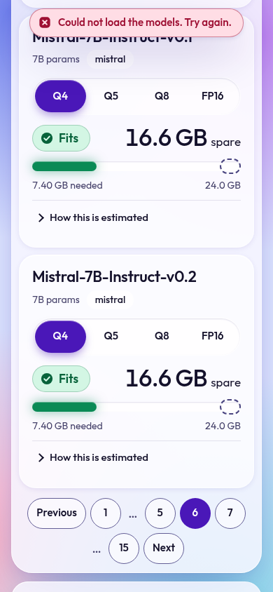</a></figure></div><p class="files">Mockup <code>docs/design/mockups/final-gist-failed-next-page.html</code>. Renders <code>docs/design/final/gist-failed-next-page-&lt;390|1280&gt;-&lt;light|dark&gt;.png</code>.</p></article></section><section class="g" id="g13"><h3><span class="gid">G13</span></h3><article class="state" id="focus-verdict"><div class="state-head"><h4>Focus on a verdict control</h4><p class="reqs">R-091, R-077</p></div><p class="blurb">The 3 px focus ring, offset 3 px, on <code>Fits</code>.</p><div class="pair"><figure class="shot"><figcaption>1280 px</figcaption><a href="final/gist-focus-verdict-1280-light.png" target="_blank" rel="noopener">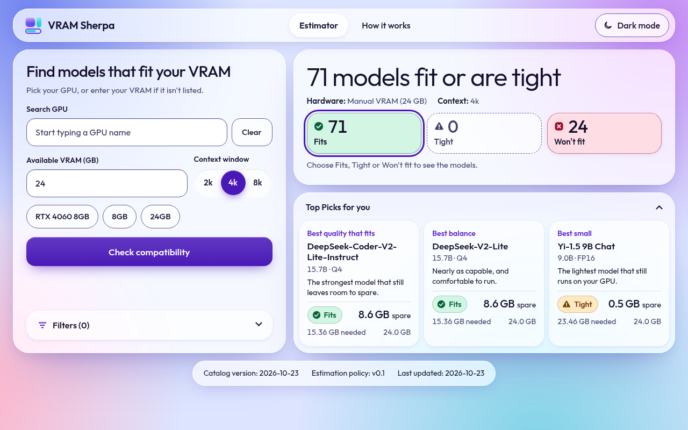</a></figure><figure class="shot tall"><figcaption>390 px</figcaption><a href="final/gist-focus-verdict-390-light.png" target="_blank" rel="noopener">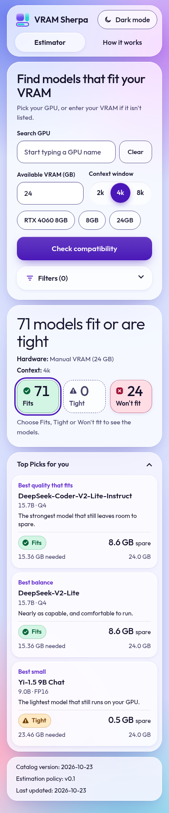</a></figure></div><p class="files">Mockup <code>docs/design/mockups/final-gist-focus-verdict.html</code>. Renders <code>docs/design/final/gist-focus-verdict-&lt;390|1280&gt;-&lt;light|dark&gt;.png</code>.</p></article><article class="state" id="focus-size"><div class="state-head"><h4>Focus on a page size</h4><p class="reqs">R-091, R-077</p></div><p class="blurb">A viewport capture with focus on <code>10</code>.</p><div class="pair"><figure class="shot"><figcaption>1280 px</figcaption><a href="final/gist-focus-size-1280-light.png" target="_blank" rel="noopener">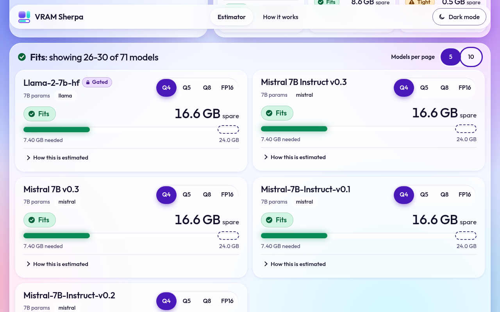</a></figure><figure class="shot tall"><figcaption>390 px</figcaption><a href="final/gist-focus-size-390-light.png" target="_blank" rel="noopener">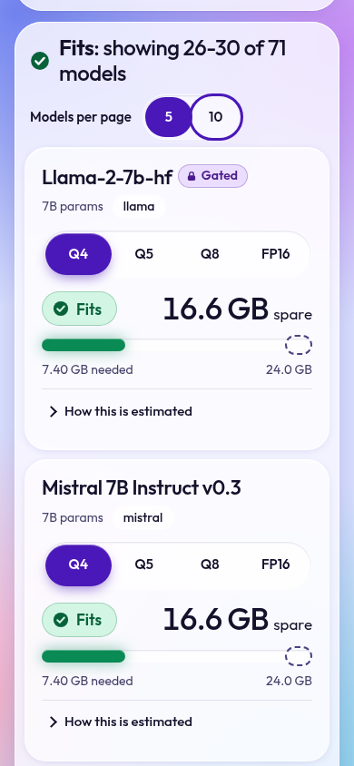</a></figure></div><p class="files">Mockup <code>docs/design/mockups/final-gist-focus-size.html</code>. Renders <code>docs/design/final/gist-focus-size-&lt;390|1280&gt;-&lt;light|dark&gt;.png</code>.</p></article><article class="state" id="focus-page"><div class="state-head"><h4>Focus on a page number</h4><p class="reqs">R-091, R-077</p></div><p class="blurb">A viewport capture with focus on <code>7</code>.</p><div class="pair"><figure class="shot"><figcaption>1280 px</figcaption><a href="final/gist-focus-page-1280-light.png" target="_blank" rel="noopener"></a></figure><figure class="shot tall"><figcaption>390 px</figcaption><a href="final/gist-focus-page-390-light.png" target="_blank" rel="noopener"></a></figure></div><p class="files">Mockup <code>docs/design/mockups/final-gist-focus-page.html</code>. Renders <code>docs/design/final/gist-focus-page-&lt;390|1280&gt;-&lt;light|dark&gt;.png</code>.</p></article><article class="state" id="focus-heading"><div class="state-head"><h4>Focus on the list&#x27;s heading</h4><p class="reqs">R-091, R-077, R-090</p></div><p class="blurb">What a keyboard user sees after a page loads in place: the heading carries the ring. A mouse user does not see it (<code>:focus-visible</code>).</p><div class="pair"><figure class="shot"><figcaption>1280 px</figcaption><a href="final/gist-focus-heading-1280-light.png" target="_blank" rel="noopener"></a></figure><figure class="shot tall"><figcaption>390 px</figcaption><a href="final/gist-focus-heading-390-light.png" target="_blank" rel="noopener"></a></figure></div><p class="files">Mockup <code>docs/design/mockups/final-gist-focus-heading.html</code>. Renders <code>docs/design/final/gist-focus-heading-&lt;390|1280&gt;-&lt;light|dark&gt;.png</code>.</p></article></section></div></section>
<section><h2>What did not work once drawn</h2><ol><li><strong>R-069&#x27;s 900 px on the first card with <code>verdict=fits</code> did not fit at first.</strong> The first drawing measured 918 px. The heading row, the page sizes and the pick figures add about 160 px to the old 770. The list pane&#x27;s top padding, the size control (44 px instead of 52) and the pick figures were tightened to reach 896 px. There are 4 px left, so anything added to the list&#x27;s header or to Top Picks breaks R-069 again.</li><li><strong>A Won&#x27;t fit card opens on a struck-through quantisation, and the approved style made it unreadable.</strong> <code>components.css</code> greys out a struck-through button, and the open button is filled. Together they gave about 1.2:1. Until now no card could open on a struck-through variant. The mockups keep the strike and use the pressed colour for the text of the open button (<code>gist.css</code>, last rule). The build needs the same rule.</li><li><strong>Top Picks can show a verdict whose count is 0.</strong> On the reference query <code>Tight</code> is 0, yet <code>Best small</code> is <code>Yi-1.5 9B Chat</code> at FP16, <code>Tight</code>, <code>0.5 GB spare</code>. Counts place a model by the variant its card opens on (Q4 here, <code>Fits</code>); a pick can be any variant. Both are correct and both are on one screen. See open point 3.</li><li><strong><code>#results-list-shell</code> is a grid item today, so an empty one still costs a row and a gap.</strong> <code>styles.css</code> puts it in row 3 across the whole grid. On a gist that leaves 14 px under the picks and an empty third row. The mockups make both shells <code>display: contents</code> and give the grid two rows, so the list pane is the only thing that can occupy row 3. Measured gap: 0 px.</li><li><strong>The form tile has slack on a gist.</strong> The right column is taller than the form, so the tile stretches. <code>Filters (N)</code> is pinned to its bottom edge, which leaves about 100 px of empty tile above it at 1280. It looks intended; the other option is to let the slack sit below <code>Filters</code>.</li><li><strong>The phone page controls wrap awkwardly.</strong> At 390 px the <code>…</code> that follows <code>7</code> starts the second row (<code>… 15 Next</code>). R-091 allows a wrap, and keeping <code>Previous</code>, the numbers and <code>Next</code> in one order for the keyboard rules out moving the two buttons to their own row. The alternative is a three-row stack, which is 50 px taller.</li><li><strong>R-084&#x27;s note reads oddly when two controls are inert.</strong> <code>/results?vram_gb=1</code> has <code>Fits</code> 0 and <code>Tight</code> 0, and the note under them says <code>Choose Fits, Tight or Won&#x27;t fit</code>. The HLD table asks for the note whenever one count is above 0, so it is drawn. Dropping it when only <code>Won&#x27;t fit</code> is above 0 would read better.</li></ol></section>
<section><h2>Open points</h2><p class="blurb" style="margin-bottom:14px">Each needs a yes or no from you.</p><ol><li><strong>Back and Forward reload the page (HLD open point 1, ADR-0017).</strong> The design assumes yes: each Back or Forward within results is a full page load and a brief repaint, and no view is kept in <code>localStorage</code>.</li><li><strong>Loading and failure feedback on every results refresh, including refreshes that end on the gist (HLD open point 2, ADR-0018).</strong> Drawn: <code>loading-from-gist</code> and <code>failed-from-gist</code> show it. Saying no means the build checks the request&#x27;s <code>verdict</code> first.</li><li><strong>Counts and Top Picks can disagree (item 3 above).</strong> Options: leave as drawn; or add the quantisation to a pick&#x27;s verdict (<code>Tight at FP16</code>); or take picks only from each model&#x27;s open variant, which changes R-024&#x27;s rules and is a requirements change. I recommend leaving it as drawn.</li><li><strong>Where the feedback sits.</strong> Drawn at the top of the viewport (under the sticky header at 1280) because after <code>Next</code> the pager is at the bottom and a bottom message would cover the links. Say if you want it at the bottom.</li><li><strong>The failure message has no dismiss and no retry.</strong> R-090 asks for neither. The build must decide when it goes away; I suggest when the next request starts. It is not drawn with a close button.</li><li><strong>The selected-control cue.</strong> A 3 px ink border on the selected tile. If you prefer a filled tile, a corner mark or an underline, the measure to keep is 3:1 in both themes without relying on hue.</li><li><strong>The phone page controls (item 6 above).</strong> Natural wrap, as drawn, or the three-row stack.</li></ol></section>
<section><h2>Wording</h2><p class="blurb" style="margin-bottom:14px">No new words were needed. Every string below comes from R-084 to R-092 or from the approved copy table, drawn as written.</p><div class="table"><table><thead><tr><th>Where</th><th>Text</th><th>Source</th></tr></thead><tbody><tr><td scope=row>Note under the controls on the gist</td><td><code>Choose Fits, Tight or Won&#x27;t fit to see the models.</code></td><td>Given by R-084; drawn as written.</td></tr><tr><td scope=row>Note under the controls with a verdict</td><td><code>Pick a quantisation on any card to see how it changes.</code></td><td>Given by R-085.</td></tr><tr><td scope=row>Count-0 message</td><td><code>No models in Tight with these settings.</code></td><td>Given by R-085; sits with the tile&#x27;s other status notices.</td></tr><tr><td scope=row>List heading</td><td><code>Fits: showing 6-10 of 71 models</code></td><td>Given by R-087. Verdict label and figures are protected; the rest is rewordable. Drawn with the verdict&#x27;s icon in front.</td></tr><tr><td scope=row>Page sizes label</td><td><code>Models per page</code></td><td>Given by R-087 as the group name; drawn as a visible label on the same row as the heading.</td></tr><tr><td scope=row>Page controls</td><td><code>Previous</code>, <code>Next</code>, <code>Page 7</code></td><td>Given by R-087 and R-091.</td></tr><tr><td scope=row>Feedback</td><td><code>Loading models</code>, <code>Could not load the models. Try again.</code></td><td>Given by R-090.</td></tr><tr><td scope=row>Top Picks figures</td><td><code>Fits</code>, <code>15.36 GB needed</code>, <code>24.0 GB</code>, <code>8.6 GB spare</code></td><td>Given by R-092. Laid out like the card&#x27;s pane without the gauge.</td></tr></tbody></table></div></section>
<section><h2>What QA can measure</h2><div class="table"><table><thead><tr><th>Check</th><th>Mockups</th><th>Note</th></tr></thead><tbody><tr><td scope=row>Gist ends, 1280 px (limit 800 px)</td><td>Reference 644, 8 GB 644</td><td>The bottom of the third pick.</td></tr><tr><td scope=row>Gist ends with a message, 1280 px (limit 900 px)</td><td>Ambiguous GPU 748, not found 703, input error 788</td><td></td></tr><tr><td scope=row>Gist, 390 px: headline and controls end at (limit 1688 px)</td><td>949 (input error 1138)</td><td></td></tr><tr><td scope=row>First card&#x27;s verdict and margin end, 1280 px (limit 900 px)</td><td>Fits 896, Tight 871, Won&#x27;t fit 871</td><td>4 px of room on the reference query. See item 1 under &quot;What did not work&quot;.</td></tr><tr><td scope=row>First card&#x27;s verdict and margin end, 390 px (limit 1688 px)</td><td>Fits 1471, Won&#x27;t fit 1446</td><td></td></tr><tr><td scope=row>Gap or empty row under the gist, 1280 px</td><td>0 px in every gist state</td><td><code>main</code> ends at the bottom of its last pane.</td></tr><tr><td scope=row>Horizontal scroll at 390 px</td><td>None: <code>scrollWidth</code> is 390 in all 26 mockups, light and dark</td><td>Including the widest window, <code>1 … 9 10 11 … 19</code>.</td></tr><tr><td scope=row>Page controls at 390 px</td><td><code>1 2 … 15</code>: 1 row; <code>1 … 5 6 7 … 15</code>: 2 rows; <code>1 … 9 10 11 … 19</code>: 2 rows</td><td>Wrapping is allowed by R-091.</td></tr><tr><td scope=row>Tap targets at 390 px</td><td>No control under 44 x 44 px: verdict tiles 74 px tall, sizes 52 x 44, page numbers 44 x 44</td><td>The three tiles share one row at 390 px.</td></tr><tr><td scope=row>Smallest text</td><td>14 px (R-070 asks for 12)</td><td></td></tr><tr><td scope=row>Text contrast</td><td>Lowest 5.96:1 (light) and 6.25:1 (dark); 0 failures in 10640 text boxes</td><td>Backdrop replaced by its worst colour, as in the overhaul.</td></tr><tr><td scope=row>Selected control</td><td>3 px ink border against 1.5 px for the others; ink on the glass pane is above 12:1 in both themes</td><td>Shape and weight, not hue; kept in forced-colours mode.</td></tr></tbody></table></div></section>
<section><h2>Notes</h2><ul class="plain"><li>The renders show the app&#x27;s approved glass look unchanged. New components are the three verdict controls, the figures on a pick, the list heading with <code>Models per page</code>, the page controls and the feedback message. <code>docs/design/build/gist.css</code> holds them.</li><li>Only the verdict controls are wired between mockups (the reference, <code>Fits</code> and <code>Won&#x27;t fit</code> of the reference query, and the 8 GB gist and its <code>Tight</code> list). The other controls are drawn, not wired.</li><li>Figures, names, order and page windows come from the app&#x27;s own functions on the real <code>data/</code> seeds (catalog 2026-10-23). The script checks itself against every worked example in R-086 and R-087 and the counts the requirements quote, and stops if one differs.</li><li><code>Check compatibility</code> returns to the gist (R-089). It is drawn as today.</li><li>Today&#x27;s page, for comparison, comes from the running app: the reference query is 10,582 px tall at 1280 and 25,855 px at 390.</li></ul></section>
</main>
<script>
(function () {
  function set(t) {
    document.querySelectorAll('img[data-shot]').forEach(function (i) { i.src = i.dataset.shot.replace('%T', t); });
    document.querySelectorAll('.shot a').forEach(function (a) { var i = a.querySelector('img'); a.href = i.src; });
    document.getElementById('t-light').setAttribute('aria-pressed', String(t === 'light'));
    document.getElementById('t-dark').setAttribute('aria-pressed', String(t === 'dark'));
  }
  document.getElementById('t-light').addEventListener('click', function () { set('light'); });
  document.getElementById('t-dark').addEventListener('click', function () { set('dark'); });
})();
</script>
